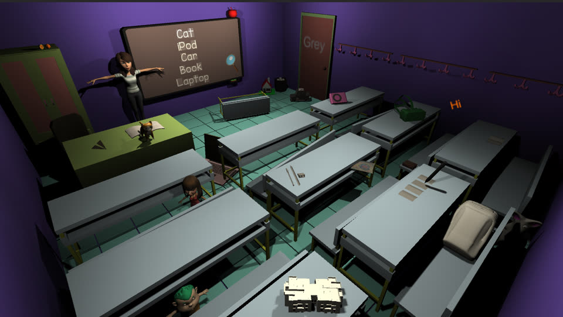
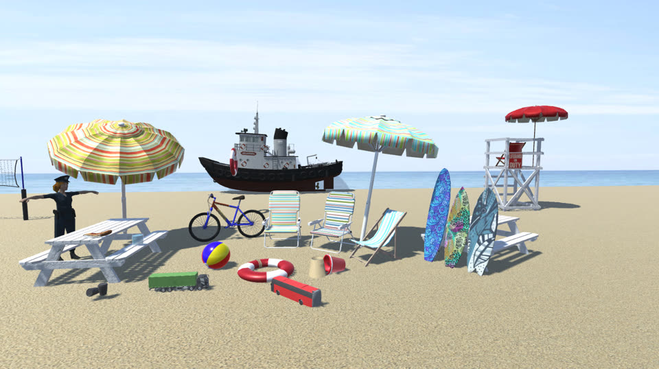
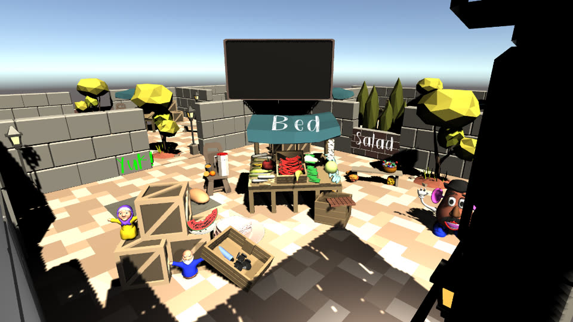
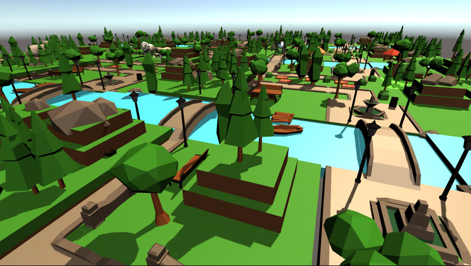

Valletta: Streets of History is a mobile AR game that sends the player through real streets of Valletta as a detective-historian. Arrive at a location, and the story appears in front of your camera.
The game in use: an AR ship appears over the harbour in Valletta.
Point zero
How the AR works
The game fuses two signals: the phone’s GPS, to know where you are in the city, and camera-based AR tracking, to keep content steady in front of you once you get there.
Walk
A 2D map with markers guides the player toward the next point of interest in the current story.
Arrive
Each AR scene holds a geo-located hotspot. When the player enters its radius, the hotspot activates.
Anchor
AR tracking on ARCore (Android) or ARKit (iOS), through Unity’s AR Foundation, places the content and keeps it stable.
Discover
The clue appears in AR. Hints and solutions are available, and the player’s unlocked points are saved on the device.
Try the hotspot logic
In the project’s Poverty-story AR scene, the hotspot activates when the player is within 4 m of its coordinates. The content is then placed 3 m in front of the camera, turned to face it, and removed again when the player leaves the 4 m radius. Drag the slider to see the idea.
Illustration of the configured behaviour, not live data.
Keep walking.
Screen recordings
The AR in action
Recorded on a phone while walking in Valletta: the map guides the player to a location, and the AR content appears in the real street.
From map to AR: an AR structure appears in the square as the player arrives.On the waterfront: an AR sailing ship appears over the harbour.
Every story starts at the National Library (Bibliotheca) and follows a different thread of daily life in Valletta, with an AR scene and mini-games along the way.
Poverty
Bibliotheca
Boat docking
Nix Mangiare steps
Grandmaster’s Palace entrance
City Gate
Court House
Quarantine
Bibliotheca
Merchant’s Street
Hastings Garden
Wells Street
St Paul’s Street
Marsamxett
Jewish story
Bibliotheca
St George’s Square
University of Malta Valletta Campus
Archbishop’s Palace
Old Mint Street residence
Jews’ Sallyport
Mini-games in the project include coin collecting, a plague-themed game and “Whack the Merchant”.
Under the hood
The AR technology stack
Engine
Unity 2020.3.21f1, C#
AR framework
AR Foundation 4.1.13 with ARCore XR Plugin 4.1.13 and ARKit XR Plugin 4.1.13, managed through XR Plugin Management 4.2.1
Geo-located AR
“Unity AR+GPS Location” third-party asset adds GPS-based hotspots and orientation on top of AR Foundation
Map & location
Online Maps by Infinity Code third-party asset for the 2D map, markers and location service
AR scene setup
Each story’s AR scene contains an AR Session, AR Session Origin and AR Camera, an AR location manager and orientation component, and a geo-located hotspot
Android build
Min SDK 24, target SDK 33, version 1.0.9
Progress
Unlocked points per story are stored as JSON on the device
Third-party components belong to their respective authors and are used under their own licences. They are credited here and are not presented as original work.
Virtual reality
VR Hidden Object
A first-person VR game for Google Cardboard-style headsets. The player looks around colourful 3D scenes to find hidden objects and match words to what they hear, practising English vocabulary along the way.
My role: one of the developers.

Classroom: the blackboard lists the objects to find.

Beach: everyday objects and vehicles to spot.

Flea market: signs and stalls introduce new words.

Zoo: a park to explore, with animals to find.
How it plays
Levels include a classroom, beach, flea market, zoo and castle, plus a show scene and a game-over screen.
Levels run against a countdown. Finding everything early earns a time bonus.
A hint button highlights an object that is still hidden, at a small cost in time. Repeated wrong clicks are penalised.
Vocabulary activities pair written words with spoken audio, such as a ten-word matching round and narrated animal phrases like “The tall giraffe”.
Technology
Engine
Unity 2019.4 (LTS), C#
VR
Google VR SDK with Unity XR Plugin Management, for Cardboard-style headsets
Input
Gaze reticle pointer; an outline highlight (QuickOutline) makes objects stand out
Platform
Android
3D models, audio and tools come partly from third-party packs, for example Unity Standard Assets, the Google VR SDK, QuickOutline and Runemark Studio’s Dark Fantasy Kit. They belong to their respective authors and are used under their own licences, not presented as original work.
Beyond this project
More AR work
I have also been one of the developers on other augmented reality projects, used both for education and in museums. In the museum work, AR let visitors look at ruins and see how the place looked in its own time, with what was lost brought back into view.
Projects
On GitHub
Featured
Valletta: Streets of History
A mobile AR game about the cultural history of Malta, funded by the Malta Arts Council. It bridges historical research and detective games: the player acts as a detective-historian who uncovers details of Maltese history and culture in real locations through geolocation and AR.
My role: one of the developers.
Developed by Bewitched Mitches, with academics and alumni of the Institute of Digital Games and the Department of English at the University of Malta. Released under GPL-3.0 or later.